View >Zoom >Show Thumbnail
to show a preview of the image at a small size, great for pixel art.
Make fine, precise edits, while keeping it all in perspective.
Pinch zooming:
If you have a touch screen, use two fingers to zoom in and out, and pan the view.
Alt+Mousewheel
to zoom in and out quickly on desktop.
Unlike the Magnifier tool, this allows you to zoom while making (or moving) a selection, for added precision.
Added View >Fullscreen
to toggle fullscreen mode. This is nice for using JS Paint on your phone.
The Text tool
now automatically expands the textbox as you type.
When resizing, there's now a minimum size based on the text in the textbox.
It previews exactly what size it will end up with when resizing.
Docking:
If you drag the Colors box or Tools box out into a window,
you can now dock it back when dragging the titlebar.
Previously to dock it you had to double click the titlebar, or drag it by the edge of the window.
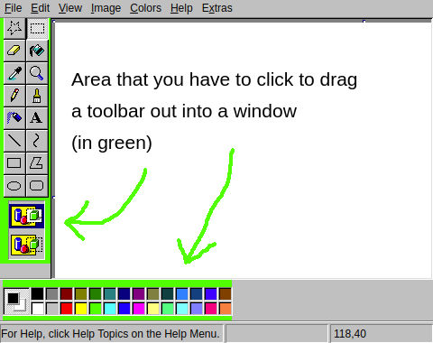
Menus
are now fully keyboard (and screen reader) accessible.
In particular, you can hold Alt
and press the access key of a menu button to open the menu,
and then (without Alt
) press the access key of a menu item to select it.
The access key of an item is the underlined letter, or the first letter of the item's text if there's no underline.
Error details
are now hidden by default in error dialogs.
The details may be more overwhelming than useful in a lot of cases,
but if you need them, you can expand the details.
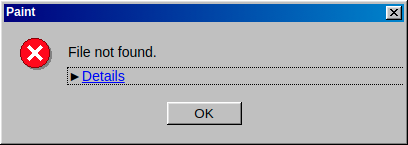
File >Exit
now exits to the official web desktop,
98.js.org
,
a re-creation of Windows 98, full of games and applications.
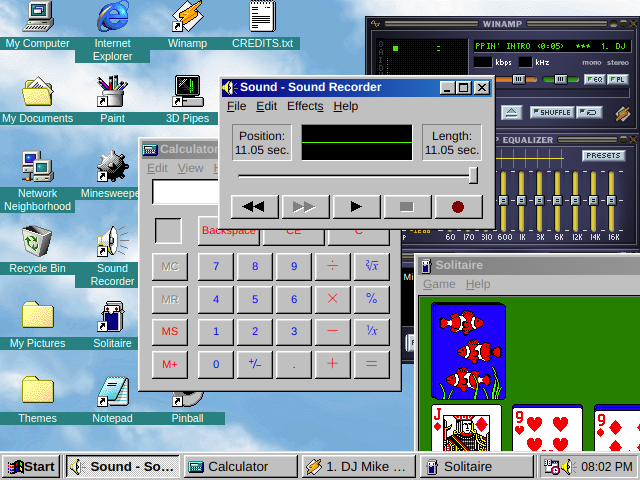
This project spun out of JS Paint, and I have implemented now
Sound Recorder, Notepad, Calculator, and even Windows Explorer,
to a high level of detail.
It also includes projects from other people, other recreations of old programs,
like Webamp
,
a meticulous recreation of Winamp,
and JS Solitaire
,
a Solitaire clone (I tweaked it for accuracy, adding the card back images, etc.)
Pixel Perfect
All interface elements are now thematically styled,
powered by OS-GUI.js
and
98.css
.
The whole interface is now pixel perfect accurate to Windows 98.
(Okay, there's a few things that are a pixel off or so, but seriously,
I lined up a screenshot and got it essentially perfect.)
Improved layout of View >Zoom >Custom Zoom
window, matching the design in MS Paint.
Added padding to all dialogs so they don't feel cramped anymore.
Message boxes now include warning or error icons, and play a sound when they appear.
Improved View >View Bitmap
: it now uses the theme's wallpaper background color,
if the image is smaller than the window.
It now closes with a click or key press, and doesn't let you edit the image (which was weird).
The Help window can now be minimized to the bottom of the screen, even though there's no taskbar.
It works like how Windows 98 does if the process managing the taskbar crashes.
Fixes
Menu buttons
are easier to open on a touch screen. Sometimes you had to tap twice before the menu opened.
Fixed large square brush
continuity (it left gaps before, due to a half-implemented optimization).
The selection and textboxes
no longer "blow up" if you resize them to a minimal size.
They are now limited when you drag an edge past the opposite edge.
Fixed a bug where vertically thin selections were difficult or impossible to drag (despite showing a drag cursor).
(The draggable region was offset outside of the selection box.)
Fixed a similar bug where tool previews would get offset if the canvas's height was very small.
Resize handles no longer get smaller when the object to resize is very small.
The draggable region for handles no longer gets smaller either, except in dimensions where it must.
It's now considerably smarter than Windows 10 about where it lets you drag handles from.
In Image >Flip/Rotate
, you can now click the custom degrees input field before selecting the "Rotate by angle" option.
The magnifier preview and other tool previews are now hidden while dragging the Colors box or Tools box.
It looked confusing when the magnifier preview was shown at the same time as
the preview outline for dragging/docking a tool window.
For languages that read right-to-left
, the History view (Edit >History
) now uses a right-to-left layout,
and the color box and tool box no longer flip their layout when dragging them into a window or docking them back to a side of the application.
The history view and error messages use more localized text
.
Fixed cut off icons
in buttons in the help window toolbar in the Modern theme.
All windows now have a default-focused control, and the last focused control in the window is remembered for when you refocus the window.
File >New
and File >Open
now create a new autosave session,
instead of using the current session.
Winter Theme
Updated the Winter theme with advent calendar-style tool buttons,
that reveal (improved) holiday pixel art for each tool when you select them.
This means that the Winter theme is more usable,
since it doesn't obscure the functions of all the tools with pixel art.
Also, if it doesn't feel quite enough like an advent calendar for you,
you can hold Shift
to select multiple tools at once.
Perhaps you could make a drawing using only one tool for the 16 days leading up to Christmas,
with exceptions for the Pick Color and Magnifier tools, of course.
Snowflakes in the menus indicate what letter you can press to select that item.
To disable the Winter theme, click the Grinch at the bottom of the screen,
who will then smile a nasty smile and steal Christmas from you.
You can get it back with Extras >Theme >Winter
.
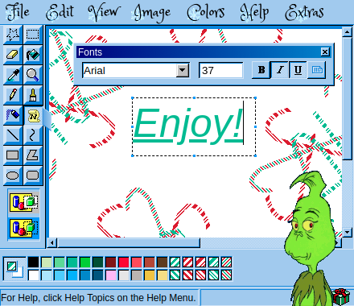
The Accessibility Update
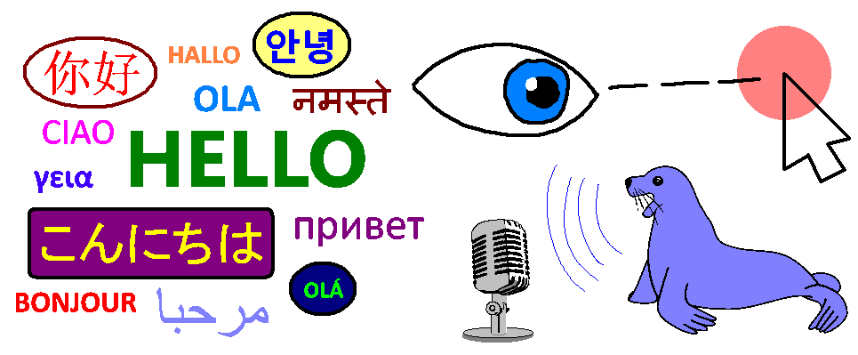
Multi-Lingual Support
JS Paint is now largely localized into 26 languages.
How am I releasing so many languages at the initial release of multi-lingual support, you may ask?
Well, this project has the somewhat unique opportunity to reuse localizations from an existing program, since it's primarily a remake of MS Paint.
I downloaded and installed 26 versions of Windows 98 in virtual machines
,
and extracted text from mspaint.exe in each one of them,
using a set of scripts that I wrote to to help me automate the process.
To change the language, go to Extras >Language
.
Your preferred language may already be detected, if specified in system or browser settings.
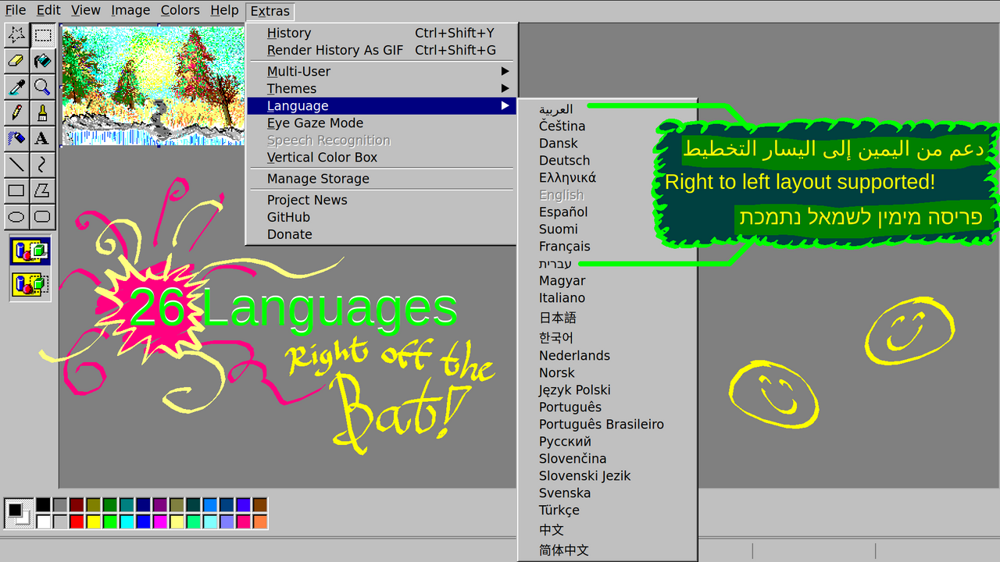
For Arabic and Hebrew, right-to-left layout is supported!
I tried my hand at some Arabic calligraphy...
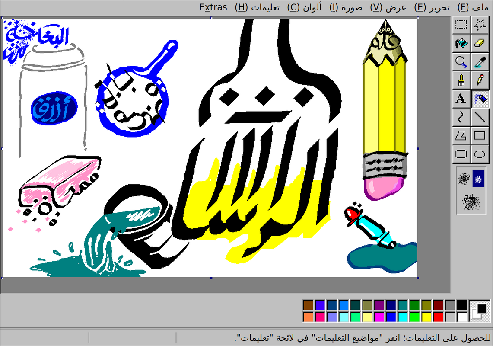
If you want to contribute translations, get in touch!
I need to do some technical work to set up for community translations on a public platform,
but I'm glad people have already expressed interest in helping translate!
(I also want to simplify the language in various parts of the UI before asking people to translate them.)
Eye Gaze Mode
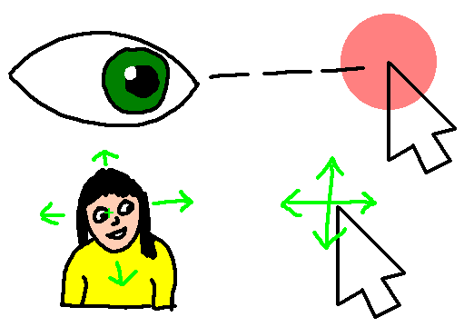
Eye Gaze Mode lets you control JS Paint without using your hands.
It's intended for use with an eye tracker, head tracker, or other coarse input scenario.
You don't need a thousand-dollar eye tracker device to play around with this, just a webcam and some free software.
I recommend Enable Viacam
, which is not
an eye gaze tracker,
but rather a general video movement tracker that you can set up to track your head movement (or your torso or hand or anything else).
Eye tracking via a webcam has a ways to go, but it's also pretty amazing in its own right.
Try GazePointer
.
Eye gaze tracking requires significant calibration, and if the calibration is off,
it's hard to use because you can't look where you want to look to interact with things.
This is why I recommend head tracking (if that's an option for you),
because then you can freely look around, and control the cursor independently
,
so if it gets offset, you can just tilt your head a bit.
Eye Gaze Mode is built mainly for people with movement disabilities like ALS or Cerebral Palsy,
but it can also just be a sort of magical experience.
It can also be frustrating, and takes some practice to master.
A good place to start is coloring line art using just the Fill tool ():
You can convert them to black and white in Image >Attributes
, and then switch back to Colors.
(This makes it work better with the Fill tool.)
Enable Eye Gaze Mode with Extras >Eye Gaze Mode
and note that it will start clicking where you hover.
You can disable this dwell clicking with the eye icon in the bottom of the screen.
Make the image fill the screen with View >Zoom >Zoom To Window
.
Bonus:
Since I implemented a vertical color box for Eye Gaze Mode,
I decided to make this available as a separate option. Access with Extras >Vertical Color Box
.
Speech Recognition
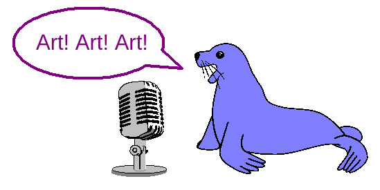
Using only your voice, you can switch tools and colors, pan the view, click on buttons on the screen by name, and use most menu items.
You can even say "draw a cat in a party hat" to have JS Paint try to sketch a cat in a party hat.
This feature pairs well with Eye Gaze Mode for a more complete hands free experience.
The feature is only available on Chrome, and only understands English.
Note that Chrome sends your voice to Google servers.
Access with Extras >Speech Recognition
. If this option is grayed out, your browser is not supported.
JS Paint will show what it thinks you said in the status bar at the bottom of the screen.
There are many synonyms for commands, and often you can do things with very short phrases like "Curve" to switch to the Curve tool.
If it's not recognizing your voice for short commands like "Curve" or "Cut", you may want to try longer phrases like "Curve tool" or "Cut selection",
as this helps it distinguish the sound as speech, rather than a cough for instance.
Edit Colors Dialog
I also implemented the Edit Colors dialog. Previously this used the native system color picker, and didn't work for some people.
Access with Colors >Edit Colors
or double click a color in the palette to edit.
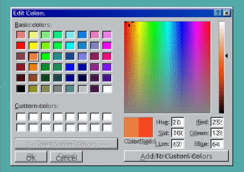
An animation morphing between JS Paint and MS Paint's color picking dialog. It's pretty close, other than the font.
Keyboard shortcuts are supported in this dialog, and for mobile devices with small screens, I made it treat adding custom colors as a separate screen.
Conclusion
JS Paint should be way more accessible now. And futuristic.
Of course there's always more that could be done.
Eye Gaze Mode could use brush stroke smoothing, and Speech Recognition could use Artificial General Intelligence.
I'd love to see people using JS Paint, especially the Eye Gaze Mode and Speech Recognition,
so if you record a video of using JS Paint, please
send it to me through this form.
This lets me know what's actually important to people, and what's confusing,
and it gives me motivation to work on new features.
Winter Update
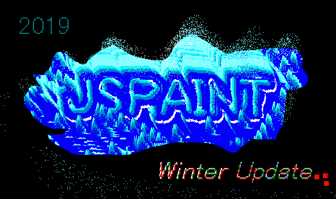
Winter Theme
A new UI skin is available, under Extras >Themes >Winter
, featuring winter and holiday icons, festive fonts, and a palette with seasonal colors and peppermint patterns.
Merry Christmas and happy Hanukkah!
Better History
New:
Jump to any point in the document's history, forwards or backwards, with Edit >History
or Ctrl+Shift+Y
.
Click on Text in the history view to go back to text editing.
You can return to when a selection existed.
Note: these states are skipped over with normal Undo and Redo, so you need to use the History window.
Branching history: if you undo, and then make changes, you can get back to everything.
Future states are preserved.
Warning:
History is not saved with the autosave. Document history will be lost if you refresh the page, or close the tab, or if the tab crashes, or if you close or restart your browser, or likely if you're just on a phone and the mobile browser loses focus.
Improved Mobile Support
New:
Use two fingers to pan the view.
I recently made it easier to grab handles for resizing things.
With that, combined with multitouch panning,
JS Paint is much more useable on a phone.
Caveat:
It's slow on some devices, and parts of the interface are still too small for touch.
Polygon, Text, and Select
Handles are now way easier to drag, with extended click targets, similar to Paint from Windows 7.
It's not unreasonable to use with a touch screen now!
This applies to selections, textboxes, and the main canvas handles.
The Text tool now perfectly previews the pixels that will be placed on the canvas.
What you see is what you get!
Also it retains all browser editing behavior, like spellcheck,
using a convoluted, yet elegant overlaying strategy.
(I prototyped this here
and here
if you're interested.)
With the fill-only option selected, the Polygon tool now previews with inverted lines, like MS Paint does.
(When you finish the polygon, the boundary of the shape matches the preview exactly,
because it actually does
draw a stroke, just the same color as the fill.)
Zoom To Mouse
New:
The Magnifier now lets you zoom to a specific location,
showing a preview of the new viewport.
Also, when zooming out with the Magnifier,
or changing the zoom from the toolbar or menus,
the top left corner of the viewport is now kept anchored.
Also, pasting a selection will now go to the top left of the viewport,
instead of the entire document.
The Grid, Custom Zoom, and Dynamic Cursors
New:
The Grid. Zoom to 4x+ and use View >Zoom >Show Grid
or Ctrl+G
to enable.
This works with browser zoom as well to provide crisp gridlines even if you zoom in with your browser.
New:View >Zoom >Custom Zoom
,
including an actually-custom numerical zoom option, unlike MS Paint.
New:
Dynamic cursors for brush and eraser,
so you now have a preview of exactly where the tool will draw.
Also, in the event that your browser clears canvases to free up memory,
you should be more likely to be able to undo to get back to a useful state.
Full Clipboard Support
JS Paint now lets you copy real image data to the Clipboard, both with keyboard shortcuts and from the Edit menu.
This feature is available in Chrome 76+. Other browsers don't support it yet, as of Sep 2019.
Also: paste a URL of an image, and JS Paint will load it.
(This is an alternative to File >Load from URL
.)